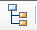
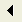
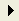
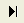
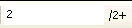
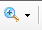

Reports Overview
Many stock reports are available in TIMS software. You can access reports in two ways. Choose the TIMS Report Link and click on the desired report from the menu.

Or click on the Reports/Letters/Captioned Telephone icon from the appropriate panel.

Some reports allow various required and optional parameters and/or date ranges to be entered. Some reports can be viewed as a detail report, labels or export list, allowing you to switch between views. The report will display on the screen and can then be printed to the printer or exported to a file.
To send the report to the printer, choose the print icon  . The report will go to the Windows default printer.
. The report will go to the Windows default printer.
Report Categories
 Notes:
Notes:
- There may also be a Report Category of "Custom" if any custom reports have been added for the practice.
- Custom selected reports can be designed to accept a patient signature. Signatures can be collected using the supported Topaz® signature pad. (contact TIMS Support for details)
- Labels and export lists have been pre-filtered to exclude patients who are marked as Deceased, Inactive, or have Communication Restrictions or Status of "No Mail" or "No-Mail". There is an filter to include these patients if desired. There is also an optional filter to exclude patients with incomplete addresses.
- All labels are formatted in standard laser label format (1" x 2 5/8", 30 per page, 3x10 layout).
- Export list format is designed to be exported to Excel, so that it can be used for mail merge in other programs.
Parameter Panel
Most of the reports include parameters, which allow you to filter the report by various criteria to display the data depending on your needs. Some the parameters may be "Optional", meaning a choice does not need to be selected if you have no need to filter for that criteria. For example, if you wish to automatically include all the sites (locations) in your practice, simply ignore the "Site" parameter.

Once the report has been launched and is displayed on the screen, the Parameter Panel displays on the left side. This allows you to dynamically change the filter criteria without having to completely re-run the report.

After you have made new choices, click the Apply button  at the top of the parameter panel to refresh the report. For parameters that accept multiple choices, you can delete any or all of your prior choices by selecting the line, the clicking the Delete button
at the top of the parameter panel to refresh the report. For parameters that accept multiple choices, you can delete any or all of your prior choices by selecting the line, the clicking the Delete button  .
.
Report Icons
The following tools are available once the report has been launched.

- Print Report
 Close the Report
Close the Report- Export Report
- Refresh report by entering all new parameters
- Toggle parameter panel (shown on left)

Toggle group tree, if applicable- Go to First Page

Go to Previous Page
Go to Next Page
Go to Last Page
Current Page Being Viewed Search for specific text within the generated report
Search for specific text within the generated report
Zoom the report to a smaller or larger size
Exporting Reports
Once the report preview is displayed, it can be exported to various file formats.
- Click the Export icon on the toolbar

- Browse to the location where you would like to save the exported file, and choose the export format.

- The most commonly used are PDF and Microsoft® Excel, but you can choose from the other options listed above.
- When the file has successfully exported, a message will popup to confirm.

Favorite Reports
Selected reports can be designated as "Favorites" for the logged in user. Each user can have their own set of favorites that will appear in a smaller list on the Home Link.
- Set a report as a favorite by right-clicking and choosing "Add to Favorites"

- Once a report has been designated as a favorite, it will appear in green font on the menu

- To remove a report as a favorite, right-click on it again and choose "Remove from Favorites"